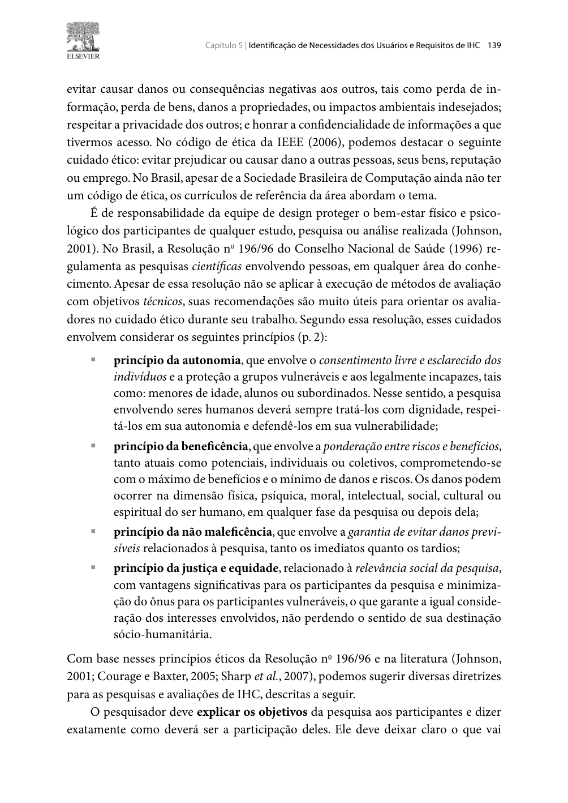

Histórico de Versão¶
| Data | Versão | Descrição | Autor(es) | Revisor(es) | Declaração de uso de IA |
|---|---|---|---|---|---|
| 27/10/2026 | 1.0 |
Criação do planejamento individual da avaliação do Storyboard 08 e da Análise de Tarefas (TAR-06) via DECIDE, com registro da alteração de escopo. | Carlos Costa | Igor Dantas Araújo | Claude Code (Anthropic) - apenas revisou e formatou o texto em Markdown |
Planejamento da Avaliação do Storyboard e da Análise de Tarefas (TAR-06)¶
Neste documento, apresenta-se o Planejamento da Avaliação do Storyboard e da Análise de Tarefas referente à TAR-06 (Consulta de ônibus em tempo real no DF no Ponto). Trata-se de um planejamento individual para orientar a avaliação formativa do Storyboard 08 e dos modelos de Análise Hierárquica de Tarefas (HTA) e CMN-GOMS da tarefa.
O planejamento aplica o Framework DECIDE (Preece et al., 2002; Barbosa et al., 2021), que estrutura a avaliação em seis atividades interligadas: Determinar objetivos, Explorar perguntas, Choose (escolher) métodos, Identificar questões práticas, Decidir questões éticas e Evaluate (avaliar e interpretar os dados). Conforme Barbosa et al. (2021, Seção 11.8, p. 279–280), essas atividades são executadas de forma iterativa: quando o avaliador precisa mudar os rumos da avaliação, as demais atividades são afetadas (Imagem 1). É o que aconteceu neste planejamento, como explica a seção a seguir.
Alteração de Escopo¶
O planejamento original de Carlos Costa previa avaliar o Storyboard 04 e a TAR-04/TAR-05 (consulta de escala e alertas operacionais) com um motorista de ônibus do STPC/DF, perfil da persona Valdir Soares. Esse participante não pôde ser recrutado a tempo.
Avaliar as tarefas do motorista com outra pessoa não resolveria o problema: um passageiro não tem vivência para dizer se a consulta de escala e o processamento de alertas operacionais condizem com a prática da profissão. Recrutar alguém do perfil avaliado é uma das questões práticas da atividade I do DECIDE (Barbosa et al., 2021, Seção 11.8, p. 280) e uma das premissas do Cronograma e Logística das Sessões (premissa 3: um participante do perfil da persona retratada).
Por isso, com a concordância de todos os integrantes do grupo, a avaliação passou a ser:
Tabela 1 — Escopo original e escopo atual da avaliação
| Elemento | Escopo original | Escopo atual |
|---|---|---|
| Storyboard | Storyboard 04 — Consulta de escala e alertas operacionais | Storyboard 08 — Consulta do ônibus em tempo real no DF no Ponto |
| Tarefa | TAR-04/TAR-05 (HTA e CTT) | TAR-06 (HTA e CMN-GOMS, elaborada por Rodrigo Barbosa) |
| Persona | Valdir Soares | João Pedro Carvalho |
| Cenário | Cenários 5 e 6 | Cenário 2 — Viagem matutina |
| Participante (P04) | Motorista de ônibus do STPC/DF | Estudante universitário que usa ônibus e já usou o DF no Ponto ou app de rastreamento semelhante |
Fonte: Elaborado por Carlos Costa (2026).
A TAR-06 foi escolhida por três motivos: (1) ela não tinha storyboard nem avaliação, então a troca não duplica o trabalho de outro integrante; (2) o próprio documento da TAR-06 declara que, por ter sido feito apenas com documentação, seus passos, problemas e recomendações são hipóteses a validar com usuários (hipóteses H1 a H7); e (3) o problema central de João Pedro é justamente que, quando o ônibus não aparece no mapa ou o horário falha, ele perde o transporte. O Storyboard 04 continua no projeto como artefato da Etapa 4.
1. D — Determinar os Objetivos da Avaliação¶
Segundo Barbosa et al. (2021, Seções 11.2 e 11.8), os objetivos da avaliação direcionam todo o estudo e costumam envolver a apropriação da tecnologia pelos usuários, ideias e alternativas de design, conformidade com padrões e problemas na interação e na interface (Imagem 2). Esta avaliação é formativa e se concentra em ideias de design (Storyboard 08) e em problemas na interação previstos no modelo de tarefas (TAR-06).
1.1 Objetivos da Avaliação do Storyboard 08¶
- Verificar a clareza da narrativa: confirmar se o participante entende a história sem explicações do avaliador.
- Verificar a verossimilhança: avaliar se a situação de esperar no ponto sem saber se o ônibus vem, e de desconfiar da previsão, corresponde à realidade de um estudante no DF.
- Avaliar a reação da persona: verificar se a decisão de João Pedro diante da informação defasada (quadro 4) faz sentido para o participante.
- Avaliar o engajamento: identificar se o participante usaria a consulta em tempo real e em que momentos.
1.2 Objetivos da Avaliação da Análise de Tarefas (TAR-06 — HTA e CMN-GOMS)¶
- Avaliar a correção e a completude do fluxo: verificar se a sequência abrir → buscar → interpretar → decidir → facilitar as próximas consultas representa o que o participante faz.
- Validar as hipóteses H1 a H7: confirmar ou refutar cada hipótese registrada na Tabela 5 da TAR-06.
- Validar as regras de seleção do GOMS: verificar se a escolha entre buscar pela linha (método 2.A) ou por ponto de referência (método 2.B), e entre aceitar ou verificar a previsão (métodos 3.A e 3.B), corresponde ao raciocínio real do participante.
- Coletar sugestões de reprojeto para o protótipo de papel da Etapa seguinte.
2. E — Explorar as Perguntas a Serem Respondidas¶
As perguntas operacionalizam os objetivos (Barbosa et al., 2021, Seção 11.8 e Tabela 11.1) (Imagem 3). As perguntas do storyboard seguem o mesmo roteiro básico do teste piloto, para que os resultados possam ser comparados com os dos demais storyboards. As perguntas da análise de tarefas foram derivadas das hipóteses da TAR-06.
2.1 Tabela de Perguntas: Avaliação do Storyboard 08¶
Tabela 2 — Roteiro de Perguntas para Avaliação do Storyboard 08
| ID | Categoria / Foco | Pergunta Orientada ao Participante | Resposta Esperada / Critério de Aceitação |
|---|---|---|---|
| Q01 | Clareza Narrativa | Com suas palavras, o que acontece nesta história? | O participante resume a história (o ônibus não aparece, João Pedro consulta o app, desconfia da previsão e decide) sem explicações adicionais. |
| Q02 | Verossimilhança | Você já ficou no ponto sem saber se o ônibus vinha, ou desconfiou do horário mostrado no aplicativo? Como foi? | O participante reconhece a situação ou explica por que ela não acontece com ele. |
| Q03 | Reação da Persona | No quadro 4, o João Pedro percebe que a posição do ônibus parou de atualizar. A decisão dele faz sentido para você? O que você faria? | O participante considera a reação coerente ou descreve outra estratégia. |
| Q04 | Engajamento | Você usaria essa consulta no seu dia a dia? Em que momento? | O participante indica se e quando usaria a funcionalidade e sugere ajustes. |
Fonte: Elaborado por Carlos Costa (2026).
2.2 Tabela de Perguntas: Avaliação da Análise de Tarefas (TAR-06 — HTA e CMN-GOMS)¶
Tabela 3 — Roteiro de Perguntas para Validação da Análise de Tarefas
| ID | Categoria / Foco | Pergunta Orientada ao Participante | Hipótese / Elemento Avaliado | Resposta Esperada / Critério de Aceitação |
|---|---|---|---|---|
| QT01 | Sequência Lógica | A ordem abrir o app → buscar a linha ou o ponto → ler a previsão → decidir o que fazer é como você faz na prática? | Plano 0 da HTA | O participante concorda com a sequência ou aponta passos faltantes ou desnecessários. |
| QT02 | Permissão de Localização | Quando um app de transporte pede sua localização, você costuma permitir? Por quê? | H1 (HTA 1.2) | O participante explica o que faz e o que o levaria a permitir ou negar. |
| QT03 | Estratégia de Busca | Você costuma buscar pelo número da linha ou por um lugar de referência, como a UnB Gama? Sabia que a busca por referência existe? | H2 e H6 (HTA 2.1; GOMS 2.A e 2.B) | O participante descreve a estratégia que usa e se lembra o número da linha. |
| QT04 | Seleção na Lista | Já escolheu a linha ou o ponto errado numa lista de resultados? O que confundiu? | H3 (HTA 2.2) | O participante relata se já errou e por quê. |
| QT05 | Confiabilidade da Informação | Você confia no tempo previsto que aparece no app? Ver a hora da última atualização da posição ajudaria? | H4 (HTA 3.2; GOMS 3.A e 3.B) | O participante diz se confia na previsão e se o indicador de atualização mudaria isso. |
| QT06 | Decisão com Dado Defasado | Quando a previsão parece errada (o ônibus "parado" no mapa ou o tempo que não diminui), o que você faz? | H5 (HTA 3.2 e 4.3; GOMS 4) | O participante descreve como percebe a defasagem e que decisão toma. |
| QT07 | Completude e Experiência | Faltou algum passo ou há algo desnecessário? Você favoritaria a linha ou ativaria avisos de atraso? Com essa consulta, você se sentiria menos perdido esperando? | H7 e objetivo 5 da HTA | O participante opina sobre a completude do fluxo, o objetivo 5 e o objetivo de experiência. |
Fonte: Elaborado por Carlos Costa (2026), com base nas hipóteses da TAR-06 de Rodrigo Barbosa (2026).
3. C — Choose (Escolher) os Métodos de Avaliação¶
Segundo Barbosa et al. (2021, Seção 11.8, p. 280), o avaliador deve escolher os métodos mais adequados para responder às perguntas, considerando prazo, orçamento, equipamentos e experiência dos avaliadores (Imagem 4). Foi escolhida a entrevista semiestruturada guiada pelos artefatos, o mesmo método das demais sessões do grupo.
- Justificativa: diagramas de HTA e GOMS não são lidos naturalmente por usuários leigos. Na entrevista semiestruturada, o avaliador mostra o artefato, explica a notação em uma frase e faz as perguntas do roteiro, podendo pedir que o participante fale mais sobre o que ele trouxer. Isso permite comparar as respostas com as dos outros storyboards e, ao mesmo tempo, explorar as hipóteses da TAR-06.
- Ordem de apresentação: primeiro o Storyboard 08 com as perguntas Q01–Q04 e só depois os diagramas da TAR-06 com as perguntas QT01–QT07. Essa ordem foi definida na calibração do teste piloto (Ata 7) para evitar sobrecarga visual.
- Instrumentos de apoio: imagem do Storyboard 08, diagrama HTA (Figura 1 da TAR-06), modelo CMN-GOMS (seção 4.1 da TAR-06), TCLE e ficha de anotação com cronômetro por bloco.
4. I — Identificar e Administrar as Questões Práticas¶
As questões práticas envolvem recrutamento, equipamentos, prazos e orçamento (Barbosa et al., 2021, Seção 11.8, p. 280) (Imagem 5).
4.1 Recrutamento e Perfil do Participante¶
- Perfil do convidado (P04): estudante universitário da FCTE/UnB Gama, alinhado à persona João Pedro Carvalho, que usa ônibus algumas vezes por semana e já usou o DF no Ponto ou outro aplicativo de rastreamento de ônibus. Esse último critério é necessário porque o CMN-GOMS da TAR-06 descreve um usuário que já domina a tarefa.
- Critério de exclusão: integrantes do Grupo 05, que já conhecem os artefatos (o teste piloto foi feito com um integrante).
- Canal: colegas da FCTE/UnB Gama, por WhatsApp. Um segundo estudante fica avisado como reserva.
- Quantidade: 1 participante. A avaliação é formativa e qualitativa, e busca indícios sobre as hipóteses, não significância estatística (Barbosa et al., 2021).
4.2 Ferramentas e Infraestrutura¶
- Ambiente: Microsoft Teams com gravação ativada; Google Meet como alternativa.
- Gravação de reserva: OBS Studio no computador do observador.
- Materiais: arquivos do Storyboard 08 e da TAR-06 abertos em alta resolução, TCLE em PDF e ficha de anotação.
4.3 Cronograma e Execução¶
Tabela 4 — Cronograma da Sessão de Avaliação
| Parâmetro | Detalhamento da Sessão |
|---|---|
| Sessão: | S4 (ver Cronograma e Logística das Sessões). |
| Data e horário: | 29/10/2026 (qui), 19:30–20:00 (a confirmar com o participante). |
| Local / canal: | Reunião remota via Microsoft Teams. |
| Avaliador (condução): | Carlos Costa. |
| Observador / anotador: | Lucas Araújo (a confirmar). |
| Duração estimada: | 5 a 10 minutos, conforme a calibração do teste piloto (Ata 7, item 2), em uma janela de 30 minutos. |
| Custo estimado: | R\$ 0,00. |
Fonte: Elaborado por Carlos Costa (2026).
4.4 Roteiro da Sessão¶
- Ligar a gravação, ler o resumo do TCLE e registrar o aceite verbal no primeiro minuto (ajuste nº 4 da calibração, Ata 7).
- Mostrar apenas o Storyboard 08 e aplicar Q01–Q04.
- Mostrar a HTA e o GOMS da TAR-06, explicar a notação em uma frase e aplicar QT01–QT07.
- Agradecer e encerrar a gravação.
O observador cronometra cada bloco e anota hesitações e reações imediatas (ajuste nº 10 da calibração).
4.5 Teste Piloto¶
O roteiro básico de entrevista foi ensaiado no teste piloto de 20/10/2026 (Ata 7; Planejamento e Protocolo do Teste Piloto), em que Carlos Costa atuou como participante simulado. Como as perguntas do storyboard seguem esse roteiro e a sessão usa os mesmos ajustes de calibração, não é feito um novo piloto. Conforme o protocolo, os dados do teste piloto não fazem parte dos resultados desta avaliação (Imagem 6).
5. D — Decidir como Lidar com as Questões Éticas¶
Os participantes devem ser respeitados e não podem ser prejudicados, nem durante a avaliação nem depois da divulgação dos resultados (Barbosa et al., 2021, Seção 11.8, p. 280) (Imagem 7). A conduta segue os princípios de autonomia, beneficência, não maleficência e justiça (Barbosa e Silva, 2010, Cap. 5, p. 139) (Imagem 8) e a Resolução nº 510/2016 do CNS:
- TCLE: o participante recebe o Termo de Consentimento Livre e Esclarecido com antecedência, e o termo é resumido no início da sessão.
- Autorização de gravação: a gravação só segue após o aceite verbal registrado no primeiro minuto.
- Anonimato: o participante é identificado apenas pelo código P04 nos documentos e no vídeo publicado.
- Liberdade de desistir: o participante pode interromper a sessão ou deixar de responder qualquer pergunta sem prejuízo.
- Foco no artefato: o avaliador deixa claro que estão sendo avaliados o storyboard e o modelo de tarefas, não o participante.
6. E — Avaliar, Interpretar e Apresentar os Dados¶
Os dados (gravação, anotações e tempos) serão interpretados e consolidados conforme Barbosa et al. (2021, Seções 11.7.5 e 11.8) (Imagem 9):
- Triagem qualitativa: as respostas serão resumidas por pergunta, preservando falas marcantes com a minutagem do vídeo.
- Confronto com a TAR-06: cada hipótese (H1 a H7) será marcada como confirmada, refutada ou não avaliada, com a evidência correspondente. A coluna "Situação" da Tabela 5 da TAR-06 será atualizada em uma nova versão do documento.
- Classificação de severidade: os problemas encontrados serão classificados de 0 (sem importância) a 4 (catastrófico), segundo Nielsen (1994).
- Limitações: com um único participante, os resultados indicam tendências e não garantem a ausência de outros problemas.
- Relato: os resultados serão apresentados no documento de relato, com objetivos, método, perfil do participante, respostas, problemas com severidade e recomendações para o protótipo de papel.
7. Fotos de Referência¶

Imagem 1 — Framework DECIDE (Barbosa et al., 2021, Seção 11.8, p. 279–280).

Imagem 2 — Determinação dos objetivos e aspectos avaliados em IHC (Barbosa et al., 2021, Seções 11.2 e 11.8, p. 264, 280).

Imagem 3 — Exploração das perguntas da avaliação (Barbosa et al., 2021, Tabela 11.1 e Seção 11.8, p. 267, 280).

Imagem 4 — Escolha dos métodos de avaliação (Barbosa et al., 2021, Seção 11.8, p. 280).

Imagem 5 — Questões práticas da avaliação (Barbosa et al., 2021, Seção 11.8, p. 280).

Imagem 6 — Teste piloto (Barbosa et al., 2021, Seção 11.7.2, p. 260).

Imagem 7 — Questões éticas da avaliação com usuários (Barbosa et al., 2021, Seção 11.8, p. 280).

Imagem 8 — Princípios éticos em pesquisas envolvendo pessoas (Barbosa e Silva, 2010, Cap. 5, p. 139).

Imagem 9 — Avaliação, interpretação e apresentação dos dados (Barbosa et al., 2021, Seções 11.7.5 e 11.8, p. 279–280).
8. Declaração sobre o Uso de IA Generativa¶
Em cumprimento ao Plano de Ensino e ao Código de Conduta da SBC, declara-se que a ferramenta Claude Code (Anthropic) foi utilizada apenas para revisar e formatar o texto em Markdown a partir do conteúdo e das decisões estruturadas por Carlos Costa. Carlos Costa responde integralmente pelo conteúdo.
9. Referências Bibliográficas¶
- BARBOSA, Simone Diniz Junqueira; SILVA, Bruno Santana da. Interação Humano-Computador. Rio de Janeiro: Elsevier, 2010. (Capítulo 5, p. 139).
- BARBOSA, Simone Diniz Junqueira; SILVA, Bruno Santana da; SILVEIRA, Milene Selbach; GASPARINI, Isabela; DARIN, Ticianne; BARBOSA, Gabriel Diniz Junqueira. Interação Humano-Computador e Experiência do Usuário. Rio de Janeiro: Autopublicação, 2021. ISBN 978-65-00-19677-1. (Capítulo 11: Planejamento da Avaliação de IHC, p. 260–280).
- BRASIL. Conselho Nacional de Saúde. Resolução nº 510, de 07 de abril de 2016. Regulamenta as pesquisas em Ciências Humanas e Sociais. Brasília: Diário Oficial da União, 2016.
- NIELSEN, Jakob. Usability Engineering. San Francisco: Morgan Kaufmann, 1994.
- PREECE, Jennifer; ROGERS, Yvonne; SHARP, Helen. Design de Interação: Além da interação homem-computador. São Paulo: Editora Érica, 2005.
- SALES, André Barros de. Plano de Ensino: Interação Humano Computador. Brasília: Universidade de Brasília, Faculdade UnB Gama (FCTE/UnB), 2026.
Autor: Carlos Costa
Revisor: Igor Dantas Araújo